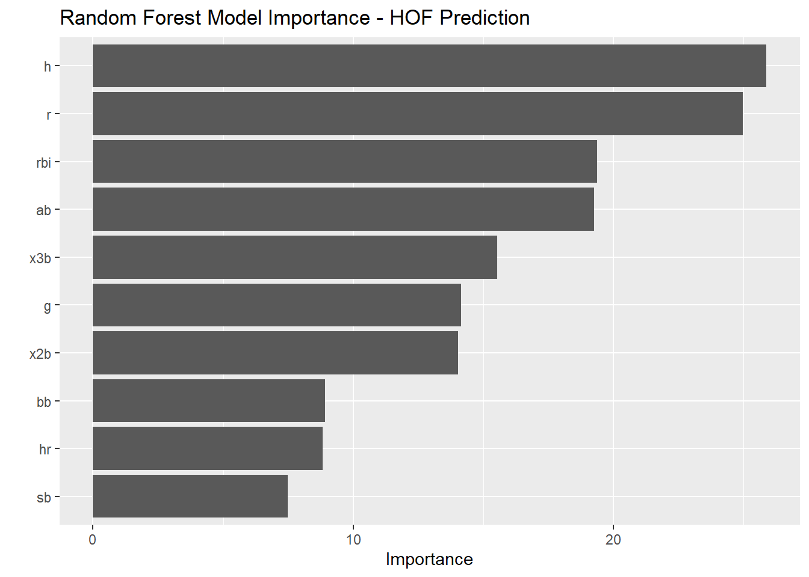
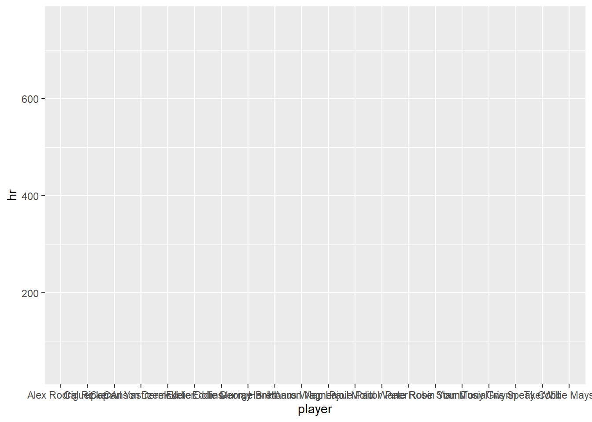
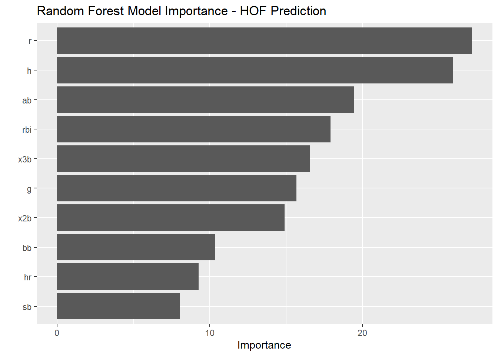
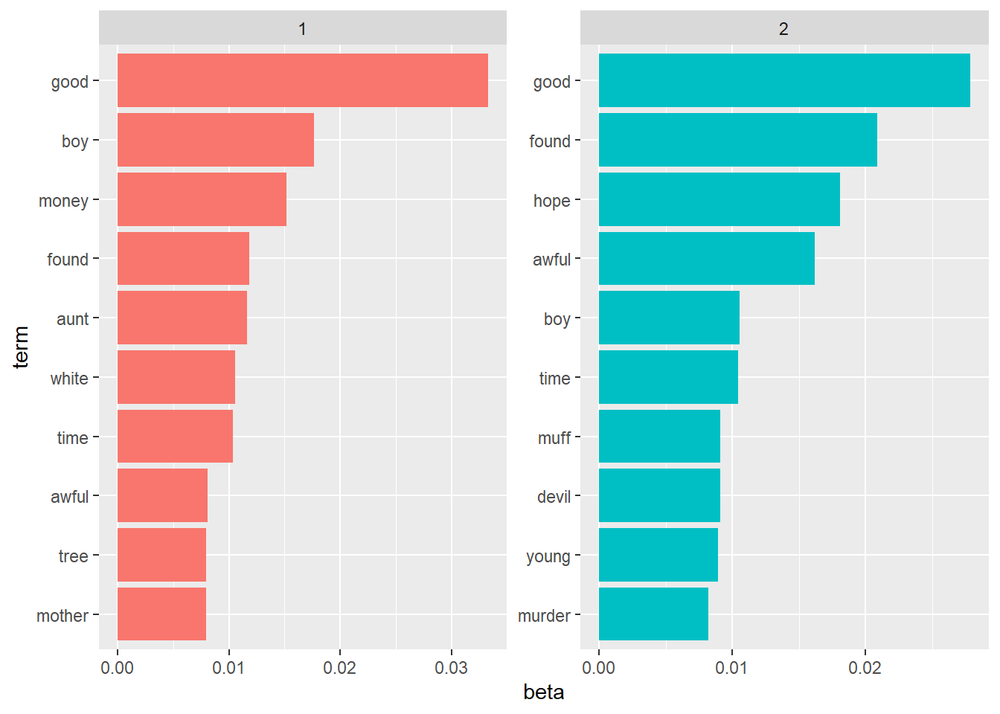

5 Text Analysis
5.1 The Adventures of Tom Sawyer
library(tidyverse)
library(tidytext)
library(stringi)
book = read_file("data_files//The-Adventures-of-Tom-Sawyer.txt") %>% enframe(name = "Book")
book## # A tibble: 1 x 2
## Book value
## <int> <chr>
## 1 1 "The Project Gutenberg EBook of The Adventures of Tom Sawyer, Complete\r\n\r\nby Mark~## Book value
## 1 4237545.2 Find Chapter Splits
book =
book %>% separate_rows(value, sep = "\nCHAPTER") %>%
slice(-1) %>%
mutate(value = str_remove_all(string = value, pattern = "\n")) %>%
mutate(value = str_replace(value, "jpg", "HERE")) %>%
separate(col = "value", into = c("Chapter", "Text"), sep = "HERE") %>%
filter(!is.na(Text)) %>%
mutate(Chapter = unlist(str_extract_all(Chapter, "[A-Z]+"))) %>%
mutate(Text = str_replace_all(Text, "[.]"," ")) %>%
mutate(Chapter = as.numeric(as.roman(Chapter)))5.3 Tokenize the Book
## # A tibble: 70,882 x 3
## Book Chapter word
## <int> <dbl> <chr>
## 1 1 1 182k
## 2 1 1 tom
## 3 1 1 no
## 4 1 1 answer
## 5 1 1 tom
## 6 1 1 no
## 7 1 1 answer
## 8 1 1 what’s
## 9 1 1 gone
## 10 1 1 with
## # ... with 70,872 more rows5.4 Remove ‘stop words’
## # A tibble: 26,251 x 3
## Book Chapter word
## <int> <dbl> <chr>
## 1 1 1 182k
## 2 1 1 tom
## 3 1 1 answer
## 4 1 1 tom
## 5 1 1 answer
## 6 1 1 what’s
## 7 1 1 boy
## 8 1 1 tom
## 9 1 1 answer
## 10 1 1 lady
## # ... with 26,241 more rows5.5 Join Sentiments
## # A tibble: 2,477 x 2
## word value
## <chr> <dbl>
## 1 abandon -2
## 2 abandoned -2
## 3 abandons -2
## 4 abducted -2
## 5 abduction -2
## 6 abductions -2
## 7 abhor -3
## 8 abhorred -3
## 9 abhorrent -3
## 10 abhors -3
## # ... with 2,467 more rows## # A tibble: 6,786 x 2
## word sentiment
## <chr> <chr>
## 1 2-faces negative
## 2 abnormal negative
## 3 abolish negative
## 4 abominable negative
## 5 abominably negative
## 6 abominate negative
## 7 abomination negative
## 8 abort negative
## 9 aborted negative
## 10 aborts negative
## # ... with 6,776 more rows## # A tibble: 4,150 x 2
## word sentiment
## <chr> <chr>
## 1 abandon negative
## 2 abandoned negative
## 3 abandoning negative
## 4 abandonment negative
## 5 abandonments negative
## 6 abandons negative
## 7 abdicated negative
## 8 abdicates negative
## 9 abdicating negative
## 10 abdication negative
## # ... with 4,140 more rows## # A tibble: 13,901 x 2
## word sentiment
## <chr> <chr>
## 1 abacus trust
## 2 abandon fear
## 3 abandon negative
## 4 abandon sadness
## 5 abandoned anger
## 6 abandoned fear
## 7 abandoned negative
## 8 abandoned sadness
## 9 abandonment anger
## 10 abandonment fear
## # ... with 13,891 more rows## # A tibble: 70,882 x 4
## Book Chapter word sentiment
## <int> <dbl> <chr> <chr>
## 1 1 1 182k <NA>
## 2 1 1 tom <NA>
## 3 1 1 no <NA>
## 4 1 1 answer <NA>
## 5 1 1 tom <NA>
## 6 1 1 no <NA>
## 7 1 1 answer <NA>
## 8 1 1 what’s <NA>
## 9 1 1 gone <NA>
## 10 1 1 with <NA>
## # ... with 70,872 more rows## # A tibble: 4,778 x 4
## Book Chapter word sentiment
## <int> <dbl> <chr> <chr>
## 1 1 1 wonder positive
## 2 1 1 pride positive
## 3 1 1 well positive
## 4 1 1 perplexed negative
## 5 1 1 loud negative
## 6 1 1 enough positive
## 7 1 1 well positive
## 8 1 1 noise negative
## 9 1 1 slack negative
## 10 1 1 well positive
## # ... with 4,768 more rows5.6 Descriptive Text Statistics
booktokens %>%
left_join(get_sentiments("bing")) %>%
filter(!is.na(sentiment)) %>%
count(Chapter,sentiment)## # A tibble: 64 x 3
## Chapter sentiment n
## <dbl> <chr> <int>
## 1 1 negative 95
## 2 1 positive 81
## 3 2 negative 40
## 4 2 positive 66
## 5 3 negative 96
## 6 3 positive 84
## 7 4 negative 96
## 8 4 positive 147
## 9 5 negative 63
## 10 5 positive 60
## # ... with 54 more rows5.7 Visualizations
booktokens %>%
left_join(get_sentiments("bing")) %>%
filter(!is.na(sentiment)) %>%
count(Chapter,sentiment) %>%
mutate(n = if_else(sentiment == "negative",n*-1,as.double(n))) %>%
group_by(Chapter) %>%
mutate(order = group_indices()) %>%
summarise(n = sum(n)) %>%
mutate(pos = if_else(n>0,"pos","neg")) %>%
ungroup() %>%
ggplot(aes(x=Chapter,y=n,fill = pos, color = pos)) +
geom_col() +
scale_fill_manual(values = c("red","green")) +
scale_color_manual(values = c("black","black")) +
theme(legend.position="none", axis.text.x = element_text(angle = 90)) +
labs(y = "Net Positive Words",
title = "Sentiment Analysis of 'The Adventures of Tom Sawyer'",
subtitle = "Net Positive Words by Chapter")
5.8 Topic Modleing
## # A tibble: 7,774 x 2
## word n
## <chr> <int>
## 1 the 3708
## 2 and 3059
## 3 a 1807
## 4 to 1696
## 5 of 1474
## 6 he 1158
## 7 was 1126
## 8 it 1090
## 9 in 943
## 10 that 875
## # ... with 7,764 more rowsbooktokens %>%
left_join(get_sentiments("bing")) %>%
filter(!is.na(sentiment)) %>%
count(word,sentiment, sort = TRUE)## # A tibble: 1,358 x 3
## word sentiment n
## <chr> <chr> <int>
## 1 well positive 152
## 2 like positive 113
## 3 good positive 101
## 4 work positive 88
## 5 right positive 83
## 6 great positive 68
## 7 dead negative 59
## 8 enough positive 57
## 9 poor negative 52
## 10 cave negative 41
## # ... with 1,348 more rowsbooktokens %>%
left_join(get_sentiments("bing")) %>%
filter(!is.na(sentiment)) %>%
count(word, sentiment, sort = TRUE) %>%
group_by(sentiment) %>%
top_n(10) %>%
ungroup() %>%
ggplot(aes(x=fct_reorder(word,n), y = n, fill = sentiment)) +
geom_col(show.legend = FALSE) +
facet_wrap(~sentiment, scales = "free_y") +
coord_flip() +
labs(x="Word")
5.9 Term Frequency
Term Frequency: The number of times that a term occurs in the book.
Inverse Document Frequency: \(\ln(\frac{Total Number of Documents}{Total Number of Documents Containing Specified Word})\): Measure of how much information the word provides.
Term Frequency - Inverse Document Frequency: Term Frequency * Inverse Document Frequency
booktokens %>%
count(Chapter, word, sort = TRUE, name = "count") %>%
add_count(word) %>%
spread(Chapter, count) %>%
arrange(desc(n))## # A tibble: 7,774 x 36
## word n `1` `2` `3` `4` `5` `6` `7` `8` `9` `10` `11` `12` `13`
## <chr> <int> <int> <int> <int> <int> <int> <int> <int> <int> <int> <int> <int> <int> <int>
## 1 a 32 66 75 62 132 58 94 34 53 54 52 29 42 81
## 2 all 32 4 8 9 20 7 12 12 6 11 2 3 9 9
## 3 and 32 102 77 110 166 101 139 96 88 99 87 66 77 113
## 4 as 32 16 4 12 18 22 14 10 7 12 10 11 9 9
## 5 be 32 4 5 4 15 7 3 6 11 9 4 5 8 16
## 6 before 32 3 3 4 2 2 3 4 3 2 3 6 2 2
## 7 but 32 19 16 18 22 14 33 22 11 11 18 10 13 28
## 8 for 32 26 11 18 46 27 15 9 6 14 10 12 16 15
## 9 got 32 6 6 6 7 1 10 4 2 5 7 2 1 4
## 10 had 32 13 13 22 27 15 13 8 17 9 8 17 12 21
## # ... with 7,764 more rows, and 21 more variables: `14` <int>, `15` <int>, `16` <int>,
## # `17` <int>, `18` <int>, `19` <int>, `20` <int>, `21` <int>, `22` <int>, `23` <int>,
## # `24` <int>, `25` <int>, `27` <int>, `28` <int>, `29` <int>, `30` <int>, `31` <int>,
## # `32` <int>, `33` <int>, `34` <int>, `35` <int>booktokens %>%
count(Chapter, word, sort = TRUE, name = "Chapter_Total") %>%
left_join(
booktokens %>%
count(word, sort = TRUE, name = "Book_Total")
)## # A tibble: 24,205 x 4
## Chapter word Chapter_Total Book_Total
## <dbl> <chr> <int> <int>
## 1 16 the 275 3708
## 2 16 and 269 3059
## 3 35 the 245 3708
## 4 33 the 205 3708
## 5 30 the 187 3708
## 6 4 the 185 3708
## 7 5 the 167 3708
## 8 4 and 166 3059
## 9 29 the 166 3708
## 10 21 the 162 3708
## # ... with 24,195 more rowsbooktokens %>%
count(Chapter, word, sort = TRUE, name = "Chapter_Total") %>%
left_join(
booktokens %>%
count(word, sort = TRUE, name = "Book_Total")
) %>%
bind_tf_idf(word, Chapter, Chapter_Total) %>%
filter(Chapter_Total!=Book_Total) %>%
filter(tf<1) %>%
arrange(-tf_idf)## # A tibble: 19,903 x 7
## Chapter word Chapter_Total Book_Total tf idf tf_idf
## <dbl> <chr> <int> <int> <dbl> <dbl> <dbl>
## 1 25 193k 1 2 0.5 2.83 1.42
## 2 20 178k 1 3 0.5 2.43 1.21
## 3 20 t 1 4 0.5 2.43 1.21
## 4 25 t 1 4 0.5 2.43 1.21
## 5 35 works 32 33 0.00636 2.83 0.0180
## 6 19 auntie 6 17 0.00754 2.14 0.0161
## 7 34 jones 5 9 0.00563 2.83 0.0160
## 8 32 cave 9 41 0.00863 1.58 0.0136
## 9 35 e 23 24 0.00457 2.83 0.0129
## 10 11 potter 10 39 0.00667 1.92 0.0128
## # ... with 19,893 more rowsbooktokens %>%
count(Chapter, word, sort = TRUE, name = "Chapter_Total") %>%
left_join(
booktokens %>%
count(word, sort = TRUE, name = "Book_Total")
) %>%
bind_tf_idf(word, Chapter, Chapter_Total) %>%
filter(Chapter_Total!=Book_Total) %>%
filter(tf<1) %>%
arrange(-tf_idf) %>%
group_by(Chapter) %>% top_n(4) %>% ungroup() %>%
mutate(word = fct_reorder(word, tf_idf)) %>%
ggplot(aes(x = word,y = tf_idf, fill = Chapter)) +
geom_col(show.legend = FALSE) +
facet_wrap(~Chapter, scales = "free", ncol = 4) +
coord_flip()
5.10 Topic Modeling
library(topicmodels)
bookdtm =
booktokens %>%
left_join(get_sentiments("nrc")) %>%
filter(!is.na(sentiment)) %>%
select(Chapter,word) %>%
count(Chapter,word) %>%
rename(document = Chapter, term = word, count = n) %>%
mutate(document = as.integer(document), count = as.double(count)) %>%
cast_dtm(document, term, count)
# set a seed so that the output of the model is predictable
ap_lda <- LDA(bookdtm, k = 2, control = list(seed = 1234))
ap_lda## A LDA_VEM topic model with 2 topics.## # A tibble: 3,526 x 3
## topic term beta
## <int> <chr> <dbl>
## 1 1 advantage 3.10e- 4
## 2 2 advantage 9.02e-79
## 3 1 adventurous 1.03e- 4
## 4 2 adventurous 7.65e-79
## 5 1 afraid 1.95e- 3
## 6 2 afraid 2.91e- 3
## 7 1 arrest 1.03e- 4
## 8 2 arrest 3.63e-79
## 9 1 astronomer 4.14e- 4
## 10 2 astronomer 4.49e-78
## # ... with 3,516 more rowsap_top_terms <- ap_topics %>%
group_by(topic) %>%
top_n(10, beta) %>%
ungroup() %>%
arrange(topic, -beta)
ap_top_terms %>%
mutate(term = reorder_within(term, beta, topic)) %>%
ggplot(aes(term, beta, fill = factor(topic))) +
geom_col(show.legend = FALSE) +
facet_wrap(~ topic, scales = "free") +
coord_flip() +
scale_x_reordered()
beta_spread <- ap_topics %>%
mutate(topic = paste0("topic", topic)) %>%
spread(topic, beta) %>%
filter(topic1 > .001 | topic2 > .001) %>%
mutate(log_ratio = log2(topic2 / topic1))
beta_spread## # A tibble: 382 x 4
## term topic1 topic2 log_ratio
## <chr> <dbl> <dbl> <dbl>
## 1 abandoned 4.14e- 4 0.00182 2.14
## 2 adventure 2.10e- 3 0.00117 -0.846
## 3 afraid 1.95e- 3 0.00291 0.580
## 4 agony 1.24e- 3 0.00122 -0.0310
## 5 agree 1.03e- 4 0.00137 3.72
## 6 agreed 1.35e- 3 0.00136 0.0174
## 7 agreement 8.21e-84 0.00547 268.
## 8 alive 1.24e- 3 0.00182 0.554
## 9 angel 2.07e- 3 0.000759 -1.45
## 10 angry 1.24e- 3 0.000456 -1.45
## # ... with 372 more rows## # A tibble: 64 x 3
## document topic gamma
## <chr> <int> <dbl>
## 1 1 1 1.00
## 2 2 1 1.00
## 3 3 1 1.00
## 4 4 1 1.00
## 5 5 1 1.00
## 6 6 1 0.417
## 7 7 1 1.00
## 8 8 1 1.00
## 9 9 1 0.0000810
## 10 10 1 0.0000971
## # ... with 54 more rowsbooktokens %>%
left_join(get_sentiments("nrc")) %>%
filter(!is.na(sentiment)) %>%
select(Chapter,word) %>%
count(Chapter,word) %>%
rename(document = Chapter, term = word, count = n) %>%
mutate(document = as.integer(document), count = as.double(count)) %>%
filter(document == 6) %>%
arrange(desc(count))## # A tibble: 214 x 3
## document term count
## <int> <chr> <dbl>
## 1 6 good 45
## 2 6 boy 32
## 3 6 awful 20
## 4 6 devil 18
## 5 6 dying 15
## 6 6 groan 15
## 7 6 honest 14
## 8 6 found 12
## 9 6 hurt 12
## 10 6 lie 12
## # ... with 204 more rows